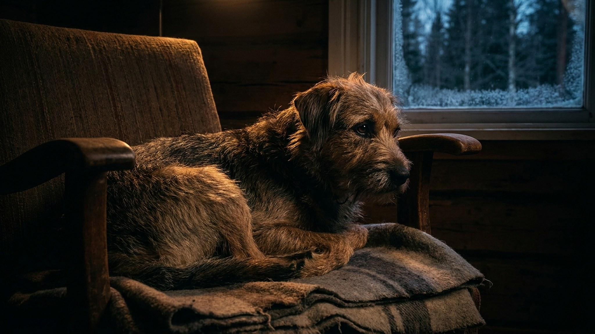

Зимой собака поднимает лапы по очереди, присаживается на снег или тянет домой через десять минут прогулки. Часто дело не в капризе, а в соли на дорожках или в морозе, которых подушечки не выдерживают. Обувь решает эту проблему, если она подобрана по размеру и надета по привычке, а не впервые перед выходом.
🐾 Чтобы уход не держать в голове
AnimaLife напомнит, когда стричь когти, вычёсывать, купать и обрабатывать от паразитов, и заведёт дневник по вашему питомцу. Бесплатно.
Настроить напоминания → Настроить в MAX →
У вас iPhone? AnimaLife есть в App Store
Три ситуации, где ботинки оправданы. Первая: обработанные дорожки, где соль и реагенты сушат подушечки, вызывают трещины и жгут кожу. Вторая: сильный мороз. Короткий выход по сухому снегу обычно проходит спокойно, а длинная прогулка в двадцать градусов мороза уже нагрузка на лапы. Третья: особое состояние собаки. Обувь оправдана для щенка, пожилой собаки, собаки после травмы лап или с чувствительной кожей.
Если собака ходит бодро, а после прогулки лапы чистые и целые, обувь не обязательна. Начните с простого: вымыть лапы тёплой водой после каждого выхода и, если есть вариант, сменить маршрут на участок без посыпки.
Мерить лапу нужно стоящей, на весу. Собака ставит лапу на лист бумаги, вы обводите контур и замеряете длину и ширину. Дальше сверяетесь с таблицей конкретного производителя: у разных марок один и тот же номер даёт разные сантиметры. Между когтями и краем ботинка должен оставаться небольшой запас, чтобы лапа не болталась и не упиралась.
Смотрите на четыре вещи: нескользящая подошва, широкая липучка выше запястья, мягкая подкладка без внутренних швов и светоотражающая полоса для зимних сумерек. На примерке собака должна шагать, а не пританцовывать. Если через пару минут она всё ещё высоко поднимает лапы, значит, размер или форма не подошли, ищите другой вариант.
Частые ошибки: сразу надевать все четыре ботинка надолго, ругать за пританцовывание, надевать на мокрые лапы. Лапы перед выходом всегда сухие, обувь снимаем дома и проверяем подушечки. Короткий чек-лист после прогулки: нет ли трещин и покраснений, не застряли ли комки снега между пальцами, не упирается ли коготь в подкладку.
Обувь защищает, но не лечит. Если трещины на подушечках не заживают неделями, собака хромает, грызёт лапы до ран или отказывается идти по привычному маршруту, покажите её ветеринару. Та же реакция нужна, когда проблемы с лапами идут вместе с вялостью или отказом от еды. Не ждите, пока «само пройдёт».
Материал носит информационный характер и не заменяет очную консультацию ветеринара.
🐾 Заведите дневник ухода за собакой
Вес, шерсть, обработки и прививки в одном месте. А если что-то смущает, AI-ветеринар ответит круглосуточно и бесплатно.
Завести дневник → Завести в MAX →
У вас iPhone? AnimaLife есть в App Store
🐾 Понравился разбор?
Подпишитесь на канал: каждый день разбираем по одному тревожному симптому у кошек и собак: что в пределах нормы, а когда пора к врачу. Подпишитесь, чтобы не пропустить разбор, который может спасти здоровье вашего питомца.